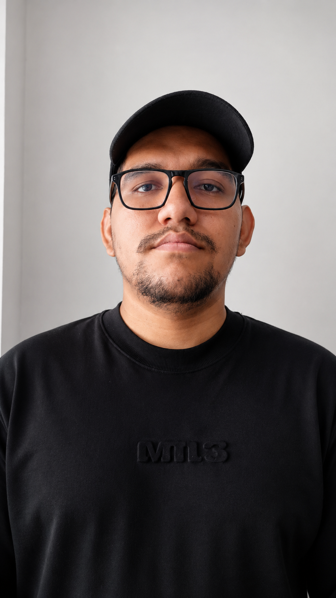

Rol
Diseño · Frontend

Estudiante de último semestre de Diseño Gráfico en la Universidad Autónoma del Caribe (Barranquilla, Colombia). Especializado en Diseño Web, UX/UI y Frontend: trabajo en la frontera entre la tipografía bien resuelta y la interfaz que respeta al usuario. Construyo sistemas, no decoraciones — cada decisión visual se justifica por jerarquía, lectura y comportamiento.
Junior F.C. es el club más representativo del Caribe colombiano, con una identidad visual muy fuerte fuera del campo pero un sitio web institucional que no refleja su peso cultural. La pieza principal del caso es una propuesta de rediseño de la web oficial bajo lenguaje deportivo moderno: tipografía editorial, tickers en vivo, fichas de jugadores y narrativa visual de partido.
Se construyó un sistema de componentes desde cero — navegación, hero de partido, marquee de noticias, plantilla, tabla y galería — todos atados a una grilla rígida y a la paleta histórica del club (azul institucional, rojo bandera, oro acento). El resultado vive en un solo HTML autocontenido y es lo que ves embebido a continuación.
Transmetro es el sistema masivo de transporte de Barranquilla. Su comunicación digital es operativa pero plana — horarios, rutas y noticias sin jerarquía. La propuesta es una plataforma de movilidad inteligente: rutas en tiempo real, planificador de viaje, paradas y cobertura, bajo una identidad amarilla-eléctrica reconocible incluso a 60 km/h.
Sistema de componentes para buscador de rutas, mapa de cobertura, ficha de parada, tabla de tarifas y módulo de noticias — todo sobre grilla densa, tipografía industrial y la paleta institucional (amarillo señalética, gris asfalto, blanco contraste). El resultado es un solo HTML autocontenido embebido a continuación.